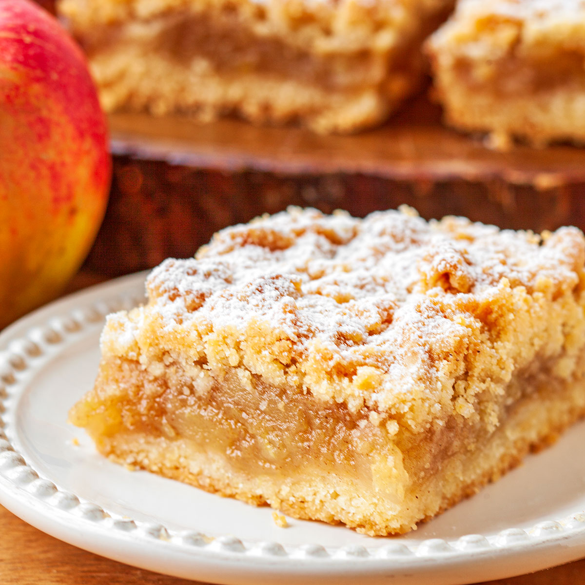

Przepis na Szarlotkę
Składniki:
- 320 g mąki (2 szklanki)
- 250 g zimnego masła (50 g masła można zastąpić smalcem)
- 1,5 łyżeczki proszku do pieczenia
- 5 łyżek cukru
- 1 łyżka cukru wanilinowego
- 1 jajko
- cukier puder (opcjonalnie)
- 1,5 kg jabłek (na szarlotkę najlepiej twardych i kwaśnych, np. szara reneta)
- 1/2 łyżeczki cynamonu
- 5 łyżek cukru
Przygotowanie:
- Jabłka obrać, pokroić na ćwiartki i wyciąć gniazda nasienne. Pokroić na mniejsze kawałki i włożyć do szerokiego garnka lub na głęboką patelnię
- Dodać cukier i cynamon i smażyć przez ok. 20 minut co chwilę mieszając, aż jabłka zmiękną i zaczną się rozpadać
- Do mąki dodać pokrojone w kostkę zimne masło, proszek do pieczenia, cukier i cukier wanilinowy.
- Składniki połączyć w jednolite ciasto (mikserem lub ręcznie), pod koniec dodać jajko (ciasto będzie dość miękkie)
- Podzielić je na pół i włożyć obie połówki do zamrażarki na ok. 15 minut
- Piekarnik nagrzać do 180 st C. Przygotować niedużą formę
- Wyjąć jedną połówkę ciasta z zamrażarki, pokroić nożem na plasterki i wylepić nimi spód formy. Następnie wyłożyć na to jabłka
- Pozostałe ciasto zetrzeć na tarce bezpośrednio na jabłka (lub pokroić ciasto na plasterki i ułożyć na wierzchu)
- Wstawić do piekarnika i piec przez ok. 50 minut lub na złoty kolor. Upieczoną szarlotkę przestudzić i opcjonalnie posypać cukrem pudrem
- Ciasto jest gotowe

zadanie4.1